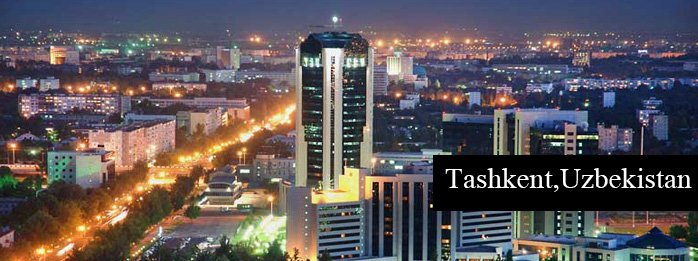
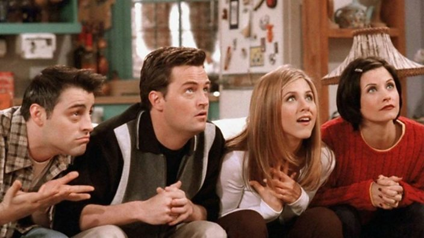

There are many things that I like to do in order to occupy myself and have fun at the same time! I would consider myself an extrovert most of the time when it comes to having fun and things like amusement parks. I love the thrill of roller coasters and heights in general; like going to the roof of a building or hiking up Bear Mountain.Other things that I enjoy vary from BIKING, going to the beach, trampoline park, swimming,etc. But of course majority of my time is spent on youtube or Netflix ;) On my free time, I am the kind of person who totatally goes to the park to hang on the monkey bars or swing on the swings. In addition,I also find myself doing exercises (mostly working on my flexibility) whenever I feel like it, which is most of the time. These days I have also been trying to increase my ability in Russian because it gets sad when your family talks in russian and you don't understand. ..Hehe! So thats a little info about me! ;))


Hidden Message Fav Song